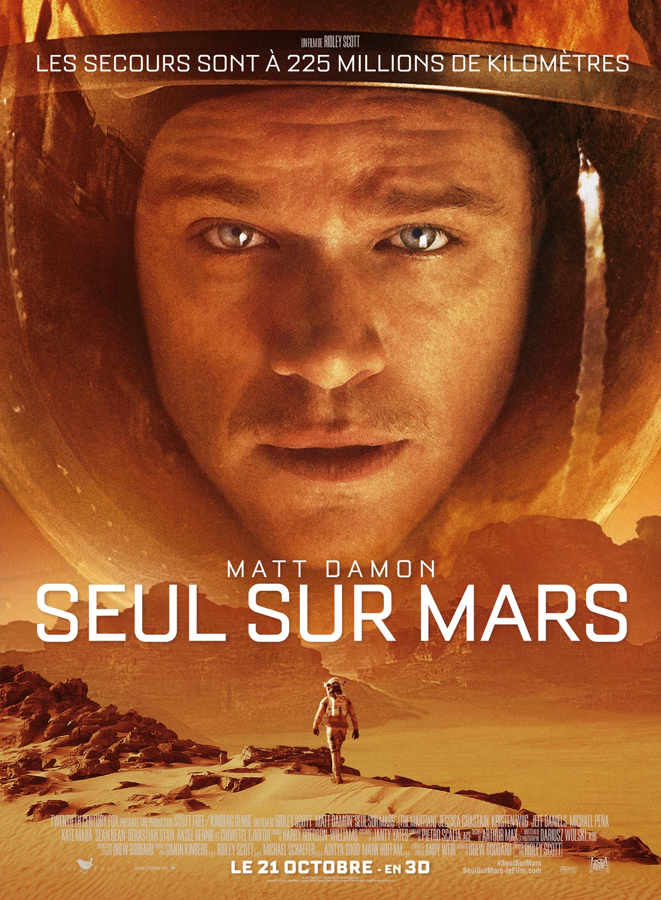
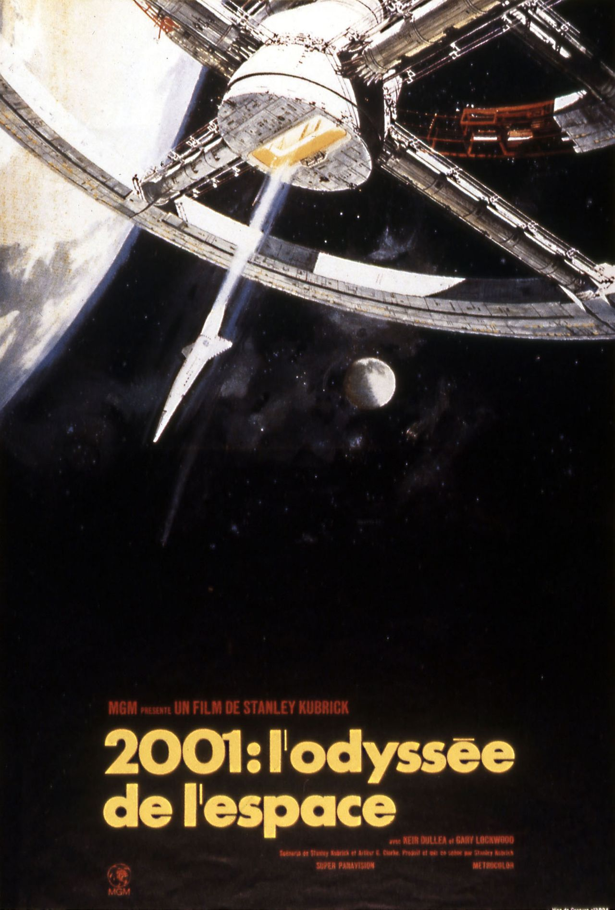
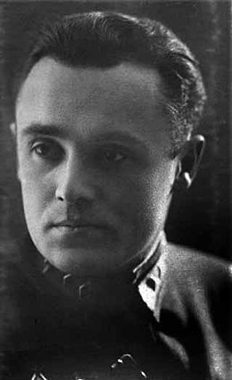

Rubrique culturelle
Sur cette page, vous pourrez trouver tous les articles ayant un lien avec la culture. Vous pourrez par exemple consulter un article sur 2001 l'Odyssée de l'espace, un chef d'oeuvre de Stanley Kurbrick. La majorité de ces articles sont en rapport avec des films, ou avec des faits historiques.
|
Ces astronomes qui ont marqué l'Histoire Nicolas Copernic est né le 19 février 1473 en Prusse Royale, l’ancien Royaume de Pologne. Connu principalement pour ses travaux en tant qu’astronome et mathématicien, il est aussi... |
|

|
Quel avenir pour la conscience dans le spatial ? L’espace a depuis toujours fasciné l’humanité mais connaissez-vous l’Histoire et les enjeux passés de la conquête spatiale ? Quels seront ceux d‘aujourd’hui et de demain ? |
|  |
Gravity et Seul sur Mars Seul sur Mars « The Martian” est à l’origine un roman de science-fiction écrit par l’auteur américain Andy Weir en 2011. Lors d'une expédition sur Mars... |

|
Etats-Unis/URSS : la conquête de la Lune Durant la guerre froide, de 1947 à 1991, les Etats Unis et l'URSS s’affrontent dans de nombreux domaines : scientifiques, militaires, et culturels. Grâce aux nouvelles technologies... |
|  |
2001 : l'Odyssée de l'Espace Stanley Kubrick est un réalisateur de renommée mondiale. Auteur de talent des très célèbres Shining et Full Metal Jacket, il surprend encore une fois son public en sortant un film à la fois... |
|  |
Les oubliés du spatial Certains inventeurs, ingénieurs ou mathématiciens oeuvrant dans le spatial sont à la source de nombreuses avancées techniques et technologiques. Et pourtant, leurs noms ont été rayés des livres d'histoire. Venez... |